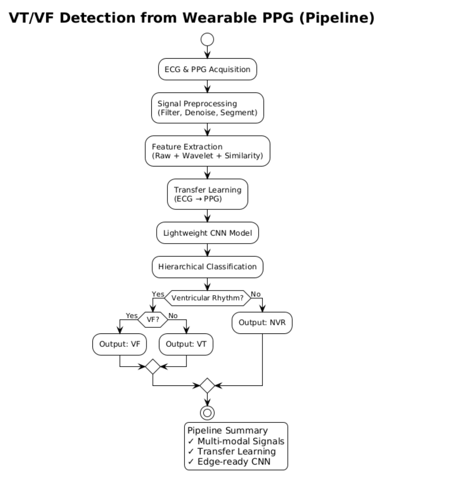
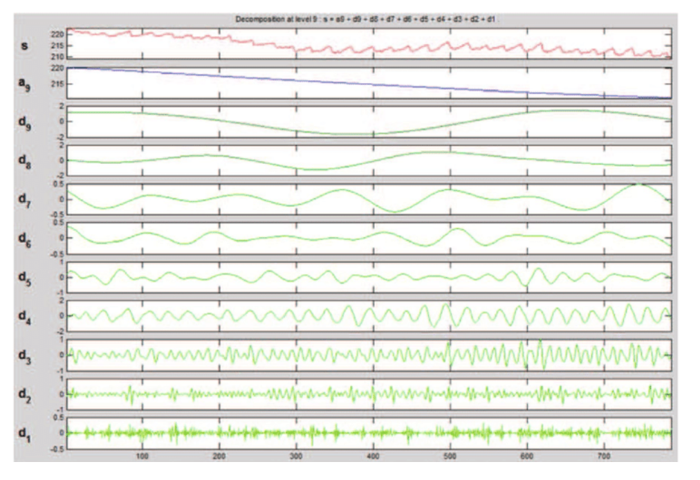

Ventricular Arrhythmia Detection

Multi-Stream CNN Architecture with Hierarchical Classification

Nine-Level Wavelet Decomposition of PPG Signal
Wearable Device for Ventricular Arrhythmia Detection and Classification
MS Research Thesis
Ventricular arrhythmias (VT and VF) are leading causes of sudden cardiac death, claiming over 300,000 lives annually. Current detection requires clinical ECG equipment or hospital visits, making continuous monitoring inaccessible for everyday use. This research enables life-threatening arrhythmia detection using commonplace PPG signals available on most consumer smartwatches, eliminating the need for specialized medical equipment.
The solution uses a multi-stream CNN architecture combining three parallel feature extraction streams:
- Raw PPG Stream: MobileNetV2-inspired lightweight CNN for edge deployment
- Wavelet Stream: 9-level Discrete Wavelet Transform (DWT) decomposition to isolate VT's mid-frequency regular patterns from VF's chaotic broadband activity
- Similarity Maps: Dynamic Time Warping to quantify beat-to-beat consistency, distinguishing VT's repetitive patterns from VF's chaotic nature
Transfer learning bridges the ECG-to-PPG domain gap by pre-training on large ECG arrhythmia databases (MIMIC-III, PulseDB) before fine-tuning on PPG data. The model is optimized for real-time inference on wearable hardware with a proof-of-concept Apple Watch deployment using CoreML.
Target Performance: >80% average sensitivity, >85% VF detection rate, <2s latency, <5MB model size for edge deployment.
Skills
- Edge AI
- Deep Learning
- Signal Processing
- Wavelet Transform (DWT)
- Transfer Learning
- CoreML
- Biomedical Signal Analysis